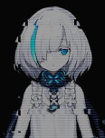

Запись в Архиве I
Процедура аутентификации в процессе --- Заархивированные данные от [CV-3 Саратога] -- Уровень Доступа: II Аутентификация успешна --- Доступ к данным --- Начинаю воспроизведение данных--- |
| Саратога |
Умм... Сегодня 27 мая. Место в котором был обнаружен флот Империи Сакуры... должно быть здесь... О, точно! Это было здесь! Хм... Несмотря на то, что именно я составляла отчёт, мне пришлось уничтожить оригинал после того, как я передала его командованию флота... Это всё меняет, не правда ли? Но благодарите свою счастливую звезду за то, что сестра Сара такая находчивая... Сомневаюсь, что какая-либо другая девушка смогла бы спасти документы. Если вы хотите узнать о "Черном драконе", я уверена, что рано или поздно вы сами узнаете. Кстати, не заноси, пожалуйста, в протокол ворчание сестры Сары. |
|
Принято. Удаляю записи из журнала. Удаление завершено. Продолжаю воспроизведение журнала. |
ТБ  |
Запись в Архиве II
Процедура аутентификации в процессе --- Заархивированные данные от [CV-3 Саратога] -- Уровень Доступа: II Аутентификация успешна --- Доступ к данным --- Начинаю воспроизведение данных--- |
| Саратога |
–––Отчёт об изменениях в данных: "Сирены появляются одна за другой в водах вблизи отдаленной базы на острове в северо-западном секторе". "Кроме того, Сирены провели ряд нападений на охраняемые сектора". "Хотя в каждой атаке участвовало всего несколько кораблей, мы считаем, что это является предвестником крупномасштабного наступления Сирен". Да, да. Я знаю, я отношусь к этому серьезно, ясно? Причина, по которой мы перебросили сюда наши резервы, заключалась в ожидании этого наступления. Тогда я понятия не имела, что мы находимся в самом разгаре Реконструкции, и Командира тоже не было рядом. А? Мы все паниковали тогда? Давай, ТБ, просто воспроизведи уже следующую запись. |
|
Поняла. Завершение воспроизведения журнала записей. Начинаю поиск и анализ следующего журнала записей. |
ТБ |
Запись в Архиве III
Процедура аутентификации в процессе --- Заархивированные данные от [CV-3 Саратога] -- Уровень Доступа: II Аутентификация успешна --- Доступ к данным --- Начинаю воспроизведение данных--- |
| Саратога |
–––Отчёт об изменениях в данных: "Авианосец Йорктаун была сильно повреждена во время наступления Сирен, но благодаря всеобщим усилиям Сирены были отброшены". "Статус сообщения о повреждениях --- CV-5 Йорктаун ––– Серьезные повреждения" "Хотя ее состояние стабильно, её оснастка была сильно повреждена, что потребовало ее перевода с линии фронта на длительное техническое обслуживание". "---Кроме того, было подтверждено явление "Микрослоя" - прилипание твердых частиц к её оснастке". ......... В любом случае, важно то, что мы все вернулись целыми и невредимыми. По крайней мере, мы благополучно добрались до Йорктаун, хотя я понятия не имела, что это за штука - "Микрослой"... ТБ, милая, не могла бы ты рассказать мне поподробнее о том, что происходило с Империей Сакуры? |
|
Поняла. Завершение воспроизведения журнала записей. Начинаю поиск и анализ следующего журнала записей. |
ТБ |
Серебряные Архивы IV
Процедура аутентификации в процессе --- Заархивированные данные от [CV-3 Саратога] -- Уровень Доступа: II Аутентификация успешна --- Доступ к данным --- Начинаю воспроизведение данных--- |
| Саратога |
"Флот, ответственный за преследование отставших Сирен, обнаружил сигналы с корабля Империи Сакуры на западе". "Вышеупомянутый корабль поспешил к источнику сигнала для разведки". Этот вышеупомянутый корабль - ваша покорная слуга, сестра Сара! "Разведка с самолёта выявила большое количество обломков Сирены в западном секторе". "Это наводило на мысль, что между Сиренами и другим крупным флотом разразилась битва". "Поскольку Союз Орла направил корабли только в восточные секторы, мы можем заключить, что одной их воюющих сторон был..." "Флот Империи Сакуры." Я помню, что видела Акаги, Кага, Сорю и... да, даже Хирю. Все выглядели так, словно только что вернулись из ада. Даже если бы я захотела помочь, я просто была слишком далеко... Кроме того, учитывая, как сложно обстоят дела с Багровой Осью... "В дополнение к флоту Империи Сакуры, поблизости было замечено еще одно командное подразделение Сирен". "Не было замечено, чтобы гуманоидное командное подразделение атаковало флот Империи Сакуры". "Наконец, учитывая ущерб, нанесенный флоту Империи Сакуры, мы можем заключить, что командному подразделению не нужно было участвовать в боевых действиях для достижения желаемых результатов". Вот почему я постаралась отправить за ними флот как можно быстрее! Я даже приказала своим самолетам подняться повыше, чтобы лучше разглядеть всю ситуацию. Но, в конце концов, я так и не смогла понять, что задумала Сирена... "Что касается особого явления..." "Ударная волна с заметным красновато-черным "цветом" появилась вокруг Акаги." "В дополнение к отражению атаки человекоподобной Сирены, почти все корабли массового производства, оказавшиеся в зоне действия ударной волны, были уничтожены". "Однако другие корабли Империи Сакуры не были заметно затронуты последствиями этой ударной волны". "Исходя из масштабов ущерба, нанесенного этим авианосцам, маловероятно, что это нападение было совершено с использованием какого-либо известного нам на данный момент оружия". Кажется, я припоминаю... на мгновение я увидела там еще кого-то... Но кто это был?... Я могу поклясться, что видела её в какой-то момент... Но когда?... Кто это был?... |
|
Ошибка воспроизведения, отсутствует путь к файлу. Воспроизведение завершено. |
ТБ |